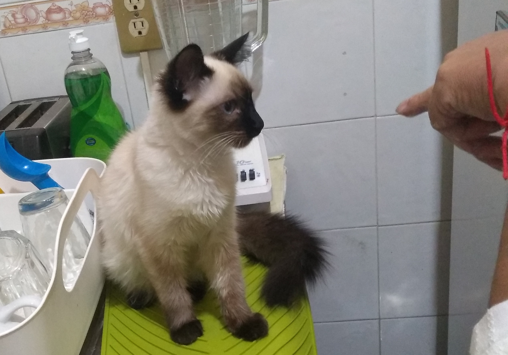

Milanesa's Recipes
Green Chilaquiles with Milanesa

Ingredients
- Tortillas
- Cooking Oil
- Green Tomatoes
- Onion
- Garlic
- Coriander
- Classic Milanesa
Cooking steps
- Boil a liter or two of water.
- Cook the green tomatoes in it till the color change but not too much
- Blend the green tomatoes with the onion, the garlic and some coriander leafs.
- Heat two spoons of oil in a cooking pot.
- Put the green sauce in the pot, add salt to taste.
- Boil for 15 minutes.
- In the mid-time heat 250 milliliters of oil in a cooking pan.
- Cut the tortillas in triangles or strips.
- Fry the tortillas in the pan with oil.
- Dry the tortillas with some absorbent paper.
- Deep the tortillas in the green sauce.
- Serve with fresh cream, cheese, onion and coriander.
- Put a Classic Milanesa on top.